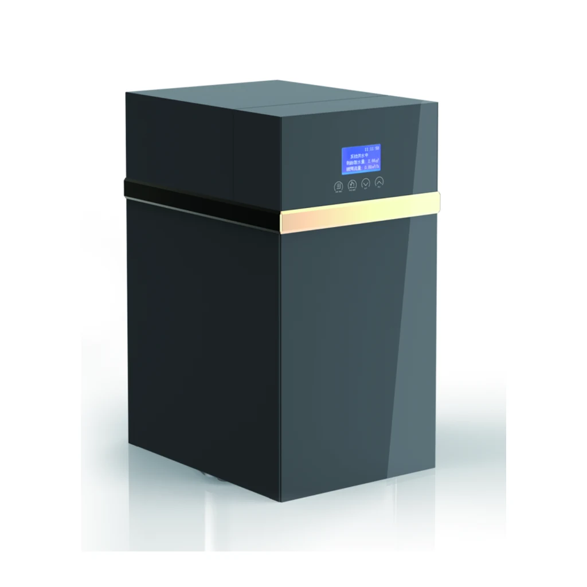
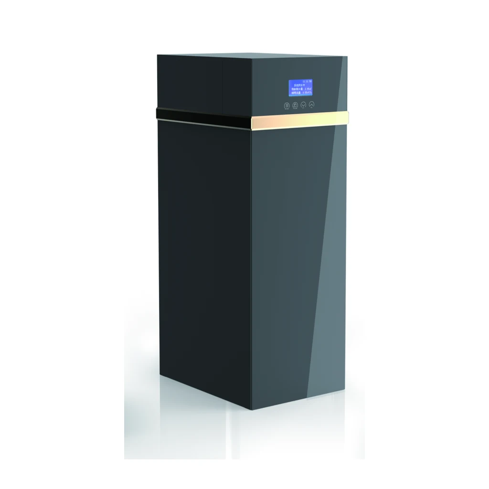
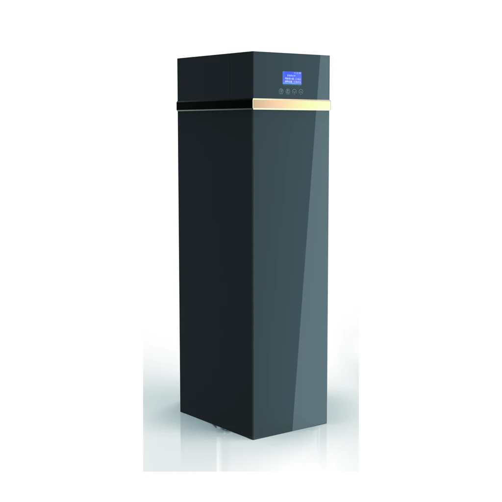

Adoucisseur automatique
YC-R1000B
YC-R1000B : dimensions du produit (avec by-pass) indiquées dans la source : 270X420X510mm.
Demander un devis pour YC-R1000BComparez les trois modèles de la série RB selon les données source : débit, volume de résine, dimensions de cuve FRP et encombrement de l’armoire.
Les valeurs et dimensions ci-dessous reprennent les données publiées pour chaque modèle. Vérifiez leur adéquation avec l’eau d’alimentation et les conditions du projet.

YC-R1000B : dimensions du produit (avec by-pass) indiquées dans la source : 270X420X510mm.
Demander un devis pour YC-R1000B
YC-R2000B : dimensions du produit (avec by-pass) indiquées dans la source : 270X420X710mm.
Demander un devis pour YC-R2000B
YC-R3000B : dimensions du produit (avec by-pass) indiquées dans la source : 270X420X1020mm.
Demander un devis pour YC-R3000BLes identifiants de modèles et les valeurs techniques suivent la source anglaise ; aucune capacité de traitement garantie n’est déduite des valeurs de débit.
| Spécification | YC-R1000B | YC-R2000B | YC-R3000B |
|---|---|---|---|
| Type de vanne | Vanne d’adoucissement automatique | Vanne d’adoucissement automatique | Vanne d’adoucissement automatique |
| Mode de régénération | Meter Timer Mix/Timer | Meter Timer Mix/Timer | Meter Timer Mix/Timer |
| Pression de service | 0.15-0.5MPa | 0.15-0.5MPa | 0.15-0.5MPa |
| Alimentation électrique | 220V/110 50Hz | 220V/110 50Hz | 220V/110 50Hz |
| Dimensions des raccords d’entrée et de sortie | 3/4" | 3/4" | 3/4" |
| Diamètre de vidange | 12mm | 12mm | 12mm |
| Température de service | 5~48℃ | 5~48℃ | 5~48℃ |
| Vanne de saumure | Oui | Oui | Oui |
| Volume de résine | 12L | 18L | 25L |
| Dimensions de la cuve FRP | 1015 | 1024 | 1035 |
| Débit indiqué | ≤1.0T/H | ≤2.0T/H | ≤3.0T/H |
| Dimensions du produit (avec by-pass) | 270X420X510mm | 270X420X710mm | 270X420X1020mm |
La source décrit une série d’adoucisseurs automatiques avec une vanne automatique et les caractéristiques listées dans le tableau. Les résultats de traitement, la qualité du média ou de la résine et la capacité nominale doivent être confirmés pour l’eau d’alimentation et la configuration visées.
YC-R2000B : ≤2.0T/H, 18L volume de résine, cuve FRP 1024 et dimensions 270X420X710mm.
Non. Le débit est repris comme donnée de sélection de la source ; il doit être confirmé selon les conditions de l’eau d’alimentation et la conception du système.
Indiquez la référence YC exacte, l’analyse de l’eau, les exigences électriques, les raccordements, la configuration prévue et la quantité du projet.